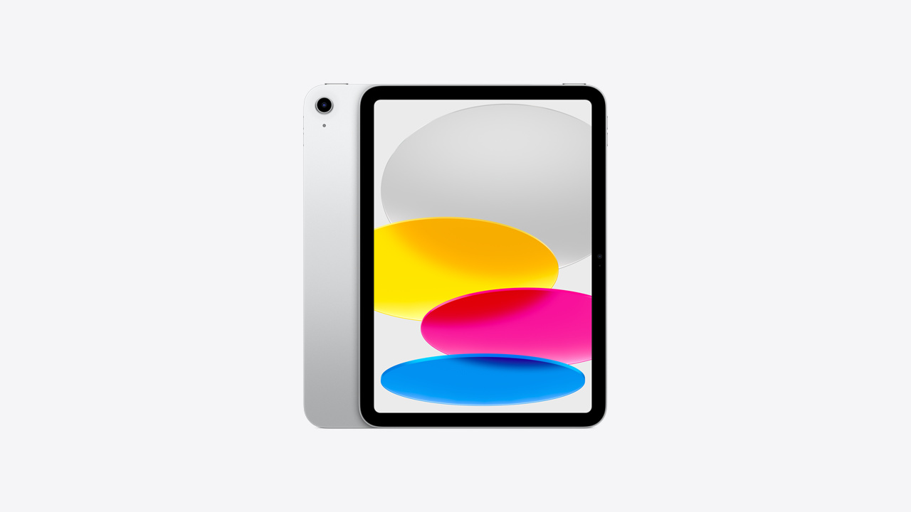
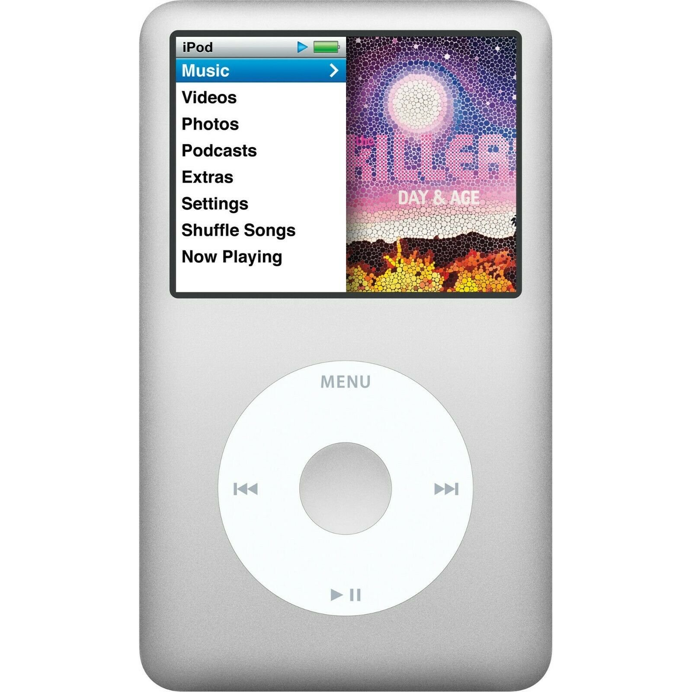
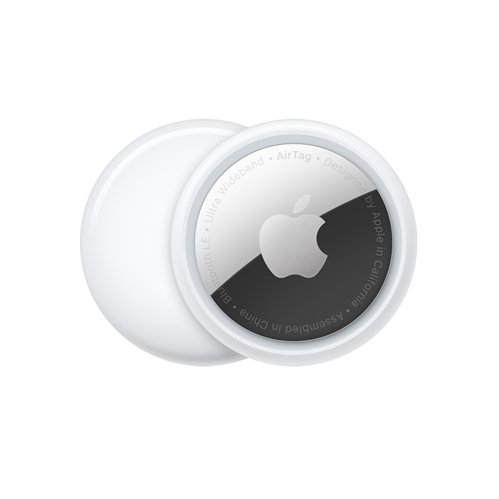
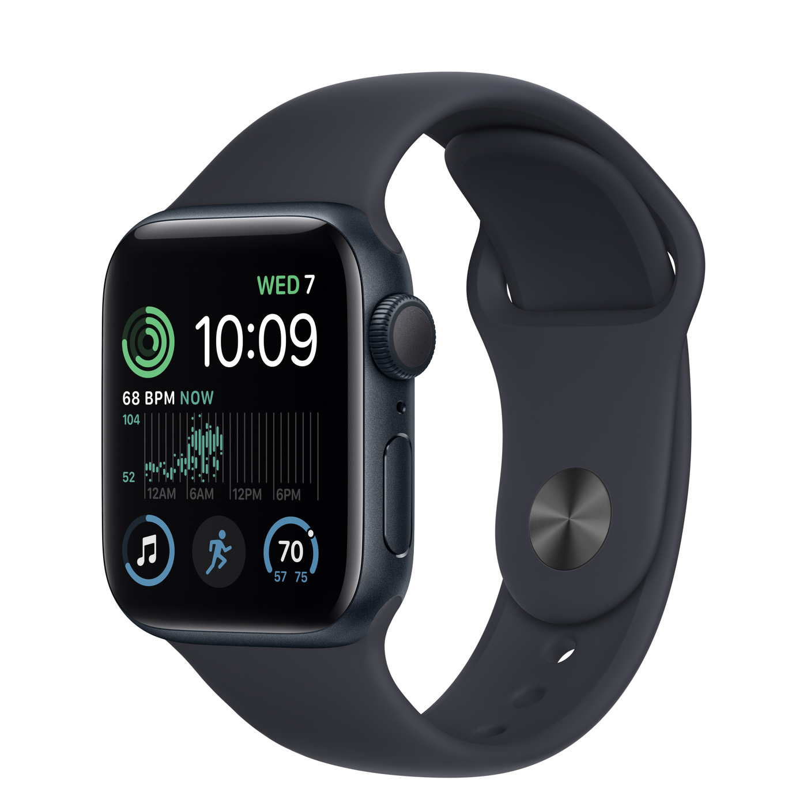
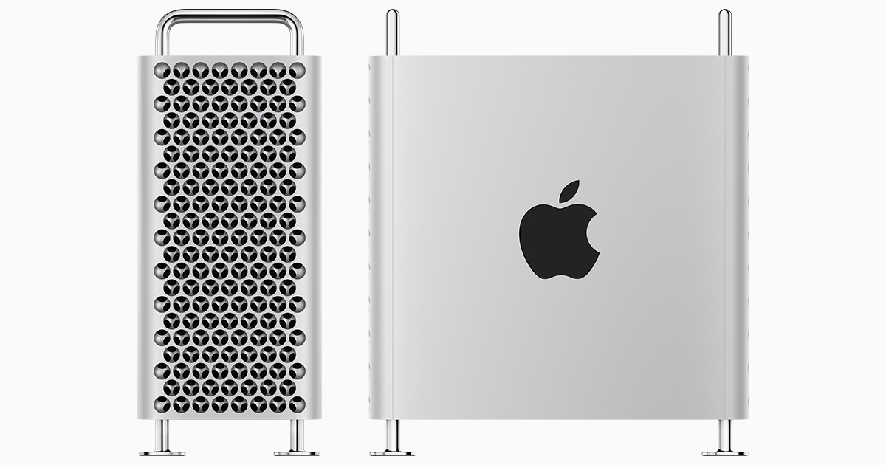

| Image | Product | Launch Date | Description |
|---|---|---|---|
 |
Apple II | 1977 | The company's first mass-produced microcomputer and became one of the most successful personal computers of its time. | iPhone | 2007 | The company's first smartphone, that also set the new standard and its success helped to establish Apple as a leader in the mobile industry. |  | iPad | 2010 | iPads worked as a space between a laptop and a smartphone by being a not-so-little but valuable device for streaming, surfing the web, making notes, and reading e-books |  | iPod | 2001 | A revolutionary product of its time, the iPod beat out the 90s MP3 players with its incredible ability to hold 1,000 songs in your pocket. | AirPods | 2016 | Wireless earphones with a magnetic case. | MacBook | 2006 | A sleek designed laptop that ran on Apple's Mac OS X operating system, with an Intel Core Duo processor and a 13.3" widescreen display. |  | AirTag | 2021 | AirTag is a revolutionary tracking device built to act as a key finder for physical objects such as keys or bags and can be even used as a pet tracking device. |  | Apple Watch | 2014 | A smartwatch with advanced specs in an ultimate design that went on to disrupt the watch industry. | Siri | 2011 | Siri was the first virtual assistant with a voice and made interaction with gadgets more "human-like". |  | Mac Pro | 2019 | A central processing unit that pushes all the limits and abilities of a MacBook and even the iMac. |
Future Projects

Apple has proposed their plan of transitioning from Intel processors to its own silicone. With this in mind it means that Macs are in need of a second generation Apple silicon update. The following are future projects we can expect:
- 15-inch MacBook Air
- M2 iMac
- M2 Mac Pro Ultra
- iPad Mini 7th Generation
- iPhone 15
- AR Glasses/Mixed Reality Headset